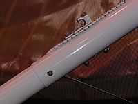
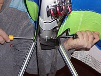
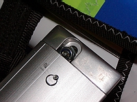

Attention Pilots Flying Aeros Gliders
Dear Pilots,
We have become aware of a potential problem with the Aeros Target, Discus, Stealth and Combat series gliders. The hex nut M8, # 11 350 (all the numbers given here correspond to the numbers in the list in the Stealth KPL 3 / Combat manual) was loosened on the bolt that attaches the top of the control frame to the keel tube - commonly referred to as the heart bolt (part No. STL 245000), distorting the safety ring. We strongly recommend you to replace this nut with the nylon lock nut M8, securing it with the safety ring (replace the original safety ring, if necessary).
This nut should be inspected and/or replaced on the gliders of the following
models:
All Target Series
All Discus Series
All Stealth Series
All Combat Series
Pilots can either make this modification on their own, using two screw-drivers (see the picture), or address your local dealer.
|  |  |  |
We have also become aware of a remote, but still potential problem with the safety ring that is used to secure the clevis pin that holds the rear wires to the keel. The stock safety ring can too easily be removed. Therefore for your safety we recommend to replace the original safety ring by the 2.5 turn safety ring or by a split (cotter) pin + washer.
Fly safe!
Yours, Team Aeros
{kind=link}
{kind=link}
{kind=link}